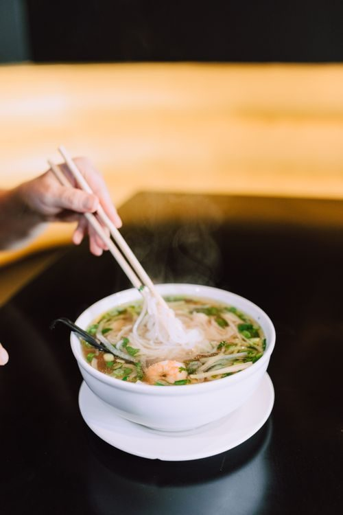
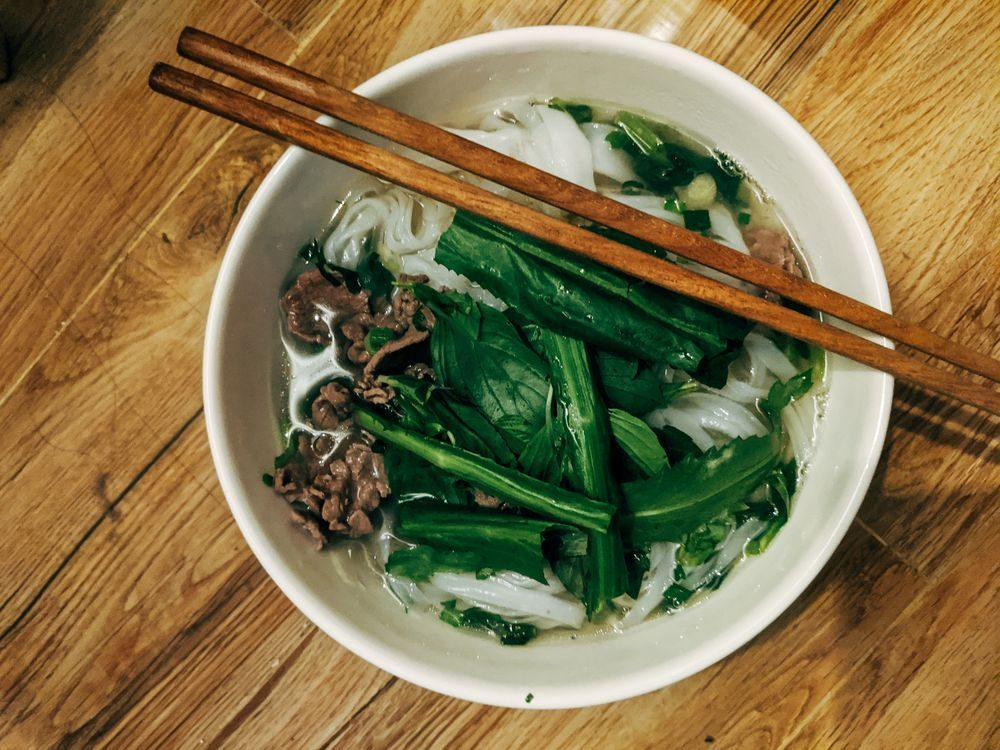
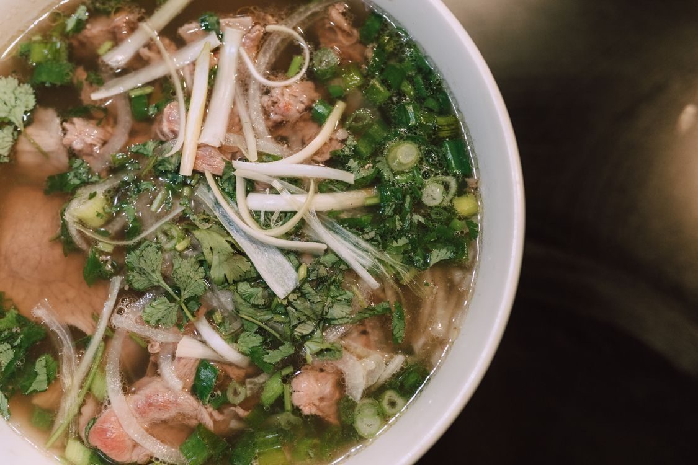

Downtown Springfield Chinese cooking
The Riksha is a family-run Chinese restaurant in downtown Springfield. Springfield-style cashew chicken leads the menu, alongside General chicken, lo mein, crab rangoon, shrimp fried rice, and sesame chicken.

The Riksha sits at 222 Park Central N in Springfield. It is a family-run Chinese restaurant offering dine-in or takeout, plus delivery.


222 Park Central N, Springfield, MO 65806
Monday to Friday, 11:00 AM to 7:00 PM